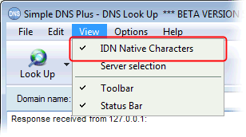
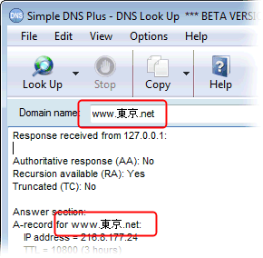
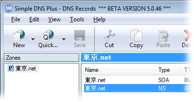

Technically the DNS protocol is limited to standard ASCII characters (byte values 0-127), which does not include any non-english characters.
However in some recent end-user applications, like FireFox and Microsoft Internet Explorer 7, it is now possible to use domain names containing non-english characters - so called "internationalized domain names" or "IDNs".
This is done by puny-encoding (RFC3492) the IDN behind the scenes so that the domain name sent to the DNS server and web-server is in an encoded form containing only the standard characters allowed in the DNS protocol.
In Simple DNS Plus version 5.0 you can now also enter and display domain names with native characters directly (no punycode conversion needed), and have an option to display native character or punycoded domain names and quickly switch between these modes.
The DNS Look Up, DNS Record, and DNS Cache Snapshot windows all have a View menu / IDN Native Characters function which allows you to select how IDNs should be displayed:

When this is enabled, you will see IDNs with native characters in various data fields and lists in the program:

